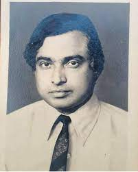
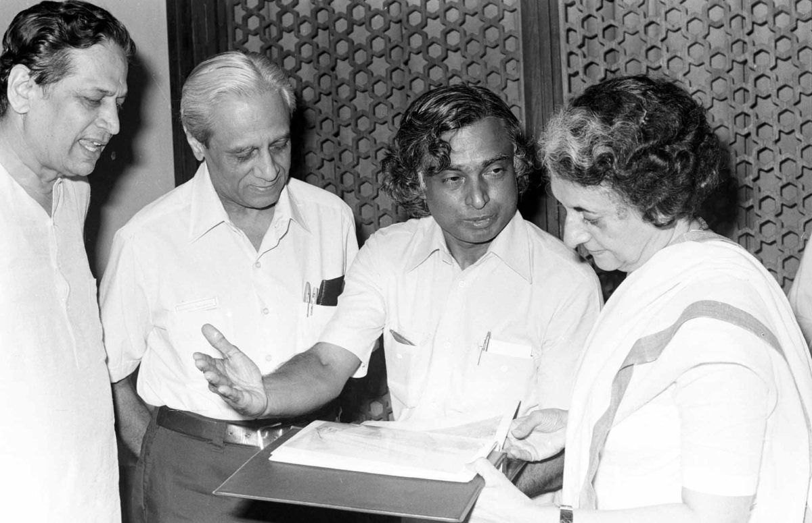

Early Life
Avul Pakir Jainulabdeen Abdul Kalam was born on October 15, 1931, in Rameswaram, Tamil Nadu, India. He grew up in a humble environment and overcame many obstacles to pursue his education.
Scientific Contributions
Dr. A.P.J. Abdul Kalam was a prominent scientist who played a leading role in India's civilian space program and military missile development efforts. He is known as the "Missile Man of India" for his work on the development of ballistic missile and launch vehicle technology.
Legacy
A.P.J. Abdul Kalam served as the 11th President of India from 2002 to 2007. He was widely respected for his humility, integrity, and vision for India's development. Dr. Kalam continued to inspire millions of people, especially youth, through his motivational speeches and writings.